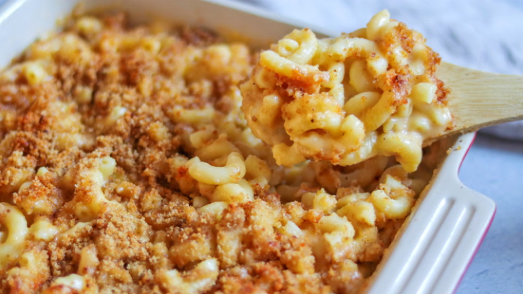

Mac and Cheese Recipe

Description
This homemade mac and cheese recipe uses a classic mixture of sharp Cheddar and Parmesan. Cheddar is a fantastic base, while Parmesan adds a more complex and salty flavor. Of course, you can adapt this recipe to suit your taste: Gruyere, Monterey Jack, and Gouda are all great options for macaroni and cheese.
Skip the boxed stuff and make homemade mac and cheese tonight. This from-scratch macaroni and cheese recipe will become a staple in your dinner rotation.
Ingredients
- 8 ounces uncooked elbow macaroni
- ¼ cup salted butter
- 3 tablespoons all-purpose flour
- 2 ½ cups milk, or more as needed
- 2 cups shredded sharp Cheddar cheese
- ½ cup finely grated Parmesan cheese
- salt and ground black pepper to taste
Instructions
- Boil the noodles, drain, and transfer to a prepared baking dish.
- Make the cheese sauce, pour the sauce over the noodles, and stir.
- Make the topping, spread it over macaroni and cheese, and sprinkle with paprika.
- Bake the mac and cheese until the topping is golden brown.
Home